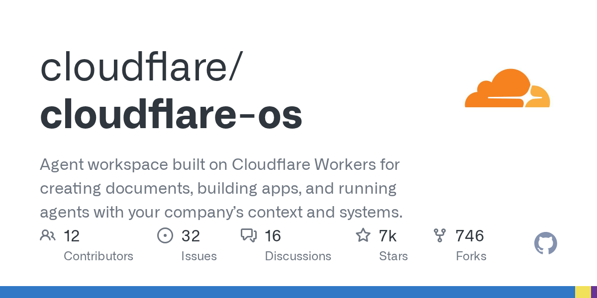

Threads｜Cloudflare OS 開源：企業級 AI 工作台與 Gatekeepers 安全架構

為什麼保存
這則 Threads 值得放進 AI 學習雷達，因為它不是單一 AI 工具，而是「公司級 AI 工作台」的架構樣本：把 agent、公司知識、文件/簡報生成、可分享小 App、權限控管與審計放在同一個可自部署平台裡。
對欒帥目前關心的 Hermes / agent 工作流來說，Cloudflare OS 特別值得研究的是：它把「每個人都有自己的 agent + workspace」變成企業內部產品，而不是只靠聊天介面或零散 MCP 工具。
Threads 可見重點
來源是無聊就學AI Lab / Boring Traveler（@akiraxtwo）的 Threads 貼文，重點整理如下：
- Cloudflare 把內部使用的 Cloudflare OS 開源。
- 定位是給全公司使用的 AI 工作平台。
- 每個人都有自己的 Agent 與工作區。
- 內建公司知識、流程與 Skills。
- 能產生文件、簡報，甚至做出可分享的小 App。
- Gatekeeper 嚴格控管權限，Agent 拿不到真正的 API key。
- 核心價值是「安全 + 可客製」，非工程師也能使用，企業也可以自己部署。
官方 / GitHub 查核
GitHub repo：`cloudflare/cloudflare-os`
- Repo：`cloudflare/cloudflare-os`
- 官方描述：Agent workspace built on Cloudflare Workers for creating documents, building apps, and running agents with your company’s context and systems.
- Homepage：`https://os.cloudflare.app`
- 主要語言：TypeScript
- 授權：Apache-2.0
- 建立時間：2026-04-15
- Stars：約 7,396（2026-08-11 查核；會隨時間變動）
- Forks：約 747（2026-08-11 查核；會隨時間變動）
- Latest release：GitHub API 查無正式 release；README 標示 August 2026 release 為 early access
README 對 Cloudflare OS 的官方定位很清楚：它不是傳統作業系統，而是兩種意義上的「OS」：
- 公司層面的 AI 生產力作業系統，讓安全團隊能放心地讓員工使用 AI。
- AI workloads 的作業系統，類似傳統 OS 管理 compute workloads。
官方列出的三個核心能力：
- **Agent chat UI**：可請 agent 執行任務，並預載公司運作知識。
- **Sandboxed application development**：可請 agent 建立 gadgets，也就是小型個人 app，並安全分享。
- **Gatekeepers security framework**：對 agents 與 apps 加上 guardrails，讓非技術使用者也能安全操作。
Gadgets：每個人自己的小型應用
Cloudflare OS 的亮點之一是 gadgets。以簡報工具為例，使用者不是呼叫雲端上同一套 SaaS，而是建立一個只屬於自己的私有 app instance。這帶來兩個重要含義：
- 安全隔離：app 本身不應能因程式漏洞洩漏使用者資料，資料存取由 Cloudflare OS sandbox 控制。
- 可客製：如果缺少某個功能，使用者可以直接請 agent 修改那個 gadget 的程式碼。
這個想法很像把「SaaS 功能」拆成「可由 AI 生成與改造的個人微型軟體」，非常適合觀察 AI 時代企業內部軟體架構的變化。
Gatekeepers：比 API key 更適合 agent 的安全邊界
README 把 Gatekeepers 形容為 supercharged MCP servers。它們在 agent / gadget 與外部服務之間負責：
- 提供乾淨的 Cap'n Web API。
- 處理 OAuth 等授權。
- 限縮到使用者明確授權的特定資源。
- 記錄 agent / gadget 的每一步操作。
- 對有副作用的動作提供 human-in-the-loop 審批。
這也呼應 Threads 貼文提到的「Agent 拿不到真正的 API key」：企業級 agent 的重點不是把更多 secret 丟給模型，而是用 capability layer、授權邊界、審批與稽核來包住外部系統。
可快速測試的方式
README 提供本機快速啟動方式：先執行 `pnpm run-local`，再開啟 `http://localhost:8787`。
也可以從官方頁面部署到自己的 Cloudflare account：`https://os.cloudflare.app/deploy`。
README 標示這是 early access，且 version 2 是完整重寫，因此更適合先拿來研究架構與概念，不建議直接視為成熟企業產品。
實務判讀
Cloudflare OS 對 AI 學習雷達的價值在於：
- **公司級 agent workspace 範本**：比單一 chatbot 更接近企業日常工作入口。
- **Skills + company context**：把 agent 需要的公司流程與知識納入產品層，而不是每次靠 prompt 重講。
- **Gadgets 模型**：提供「每個人可生成自己的小 app」的新型企業內部軟體觀。
- **Gatekeepers 安全設計**：把 agent 存取外部資源的權限、安全、審計、審批抽象成基礎層。
- **自部署 / 可客製**：Cloudflare 開源後，企業可以改成自己的 Company OS。
如果要對照 Hermes，Cloudflare OS 的 Gatekeepers 與 gadgets 值得逐幀研究：前者可作為 agent tool 權限設計參考，後者則能啟發「讓使用者用自然語言生成可部署工作小工具」的 UX。
風險與限制
- README 明確標示 early access，且仍有 rough edges。
- 企業導入仍需處理身份、權限、資料治理、合規、觀測性與成本。
- Cloudflare Workers 生態很適合 Cloudflare 客戶，但非 Cloudflare stack 的企業需要評估遷移與整合成本。
- Gadgets 讓非工程師可改軟體，也代表需要更嚴格的 sandbox、審批、版本管理與事故復原。
- 社群貼文是高層次介紹；實際功能、部署限制與安全邊界需以 README、原始碼與實測為準。